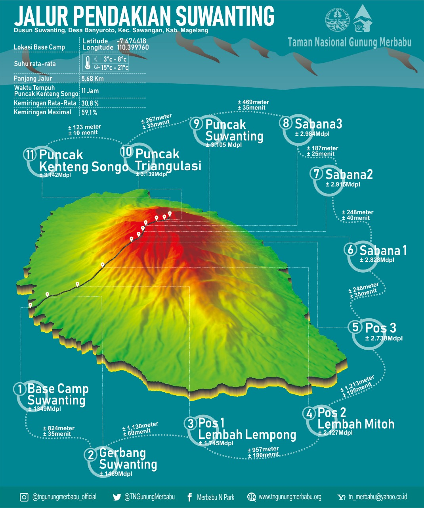

Deskripsi Umum Jalur Suwanting
Jalur Suwanting kembali dibuka pada tahun 2015 setelah lama tertidur. Terletak di sisi barat Gunung Merbabu, tepatnya di Dusun Suwanting, Desa Banyuroto, Magelang, jalur ini terkenal memiliki trek yang terus menanjak dan menguji stamina. Meski begitu, pendaki akan disuguhi pemandangan hutan yang lebat, padat, dan lebih sunyi dibandingkan jalur lainnya.
Informasi Kunci
- Lokasi Basecamp: Dusun Suwanting, Banyuroto, Magelang.
- Tingkat Kesulitan: Menengah - Mahir.
- Estimasi Waktu Naik: 8-11 jam.
- Sumber Air: Pos 2 dan Pos 3.
- Atraksi Utama: Hutan Lementung, Lembah Manding, Puncak Suwanting.
Peta Jalur
Kalkulator Estimasi Waktu
Pilih kecepatan mendaki Anda untuk mendapatkan estimasi waktu yang lebih personal.
Hasil estimasi akan muncul di sini.
Rute Pendakian (Pos ke Pos)
Pendakian dimulai dari Basecamp Suwanting menuju Pos 1 (Lembah Lempong), dilanjutkan ke Pos 2 (Lembah Mitoh), dan Pos 3 (Lembah Manding) yang merupakan area camp favorit. Setelah itu, perjalanan akan semakin terjal melewati tanjakan menuju Puncak Suwanting sebelum akhirnya bertemu dengan jalur Selo di area puncak utama.